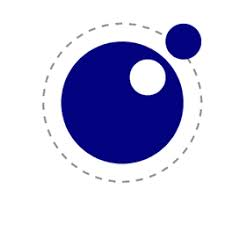

Grupo 6Tech apresenta:
CONHECENDO O AUTISMO
Bem-vindo!
Nesta página de conteúdo inclusivo você encontrará uma variedade de informações para o estudo e aprendizado relacionados ao Autismo. Tudo estruturado para facilitar o acesso às informações e apoiar o processo de aprendizagem de forma interativa e dinâmica.
*Explore nossos materiais e participe conosco desta jornada de conhecimentos e descobertas sobre o Transtorno do Espectro Autista (TEA).
O QUE É O AUTISMO
Transtorno do Espectro do Autismo (TEA), também conhecido como autismo, é um transtorno de desenvolvimento neurolOógico que afeta as habilidades físicas, motoras, de comunicação e de interação social. A condição costuma se manifestar durante a primeira infância e acomete, em maior prevalência, meninos, podendo apresentar padrões de comportamento repetitivos, interesses fixos e hiperfoco, hipo ou hipersensibilidade a estímulos sensoriais, entre outros. Os primeiros sinais de autismo podem ser percebidos logo nos primeiros meses de vida e o diagnóstico pode ser estabelecido por volta dos dois a três anos de idade. Pessoas com autismo podem manter pouco contato visual ao conversar, apresentar dificuldade de interagir e ter interesse excessivo por temas específicos. Segundo estimativas da Organização das Nações Unidas (ONU), aproximadamente 1% da população mundial pode ter autismo. Além disso, estima-se que, em todo o mundo, uma em cada 160 crianças convivem com o diagnóstico de TEA.
O TEA reúne desordens do desenvolvimento neurológico presentes desde o nascimento ou começo da infância. São elas: Autismo Infantil Precoce, Autismo Infantil, Autismo de Kanner Autismo de Alto Funcionamento, Autismo Atípico, Transtorno Global do Desenvolvimento sem outra especificação, Transtorno Desintegrativo da Infância e a Síndrome de Asperger. Segundo o Manual Diagnóstico e Estatístico de Transtornos Mentais DSM-5 (referência mundial de critérios para diagnósticos), pessoas dentro do espectro podem apresentar déficit na comunicação social ou interação social (como nas linguagens verbal ou não verbal e na reciprocidade socioemocional) e padrões restritos e repetitivos de comportamento. Todos os pacientes com autismo partilham estas dificuldades, mas cada um deles será afetado em intensidades diferentes, resultando em situações bem particulares. Apesar do diagnóstico ser comum em crianças e até bebês, os transtornos são condições permanentes que acompanham a pessoa por todas as etapas da vida.
A palavra “autismo” foi usada pela primeira vez em 1908 pelo psiquiatra suíço Eugen Bleuler para se referir a pacientes que haviam sido diagnosticados com esquizofrenia e eram excessivamente retraídos. Antes disso, o TEA (Transtorno do Espectro do Autismo) não tinha sido mencionado por nenhum outro estudioso da área de saúde mental. Isso representou o pontapé inicial para que novos estudos pudessem aparecer.
Entenda a SÍNDROME DE ASPERGER - semelhante ao AUTISMO
A Síndrome de Asperger é semelhante ao Autismo e afeta o jeito com que as pessoas percebem o mundo e como são feitas suas interações com outras pessoas. Porém, traz sinais mais leves e costuma ser diagnosticada mais tarde. Pessoas com Asperger têm interesses focados de maneira incomum em algo específico. Por exemplo, se gostar muito de uma determinada temática, terá um comportamento e comunicação quase que inteiramente voltadas para isso, levando para todas as áreas da sua vida. No ano de 2013, foi publicado em estudo que definiu que tanto o Autismo quanto a Síndrome de Asperger são condições dentro do Espectro do Autismo, porém, em graus diferentes.
A IMPORTÂNCIA DA PARTICIPAÇÃO DA FAMÍLIA
Descobrir que um filho tem autismo pode ser muito impactante para os pais e familiares em um primeiro momento. Mas, a estrutura familiar é fundamental para o desenvolvimento da pessoa com o Transtorno do Espectro do Autismo (TEA). O primeiro passo é buscar ajuda especializada e a intervenção precoce para que a criança ganhe qualidade de vida e adquira novas habilidades. Cabe aos pais de uma criança com TEA buscarem ajuda assim que suspeitarem que algo não está caminhando da forma adequada. A intervenção precoce é a maneira mais eficaz de acelerar o desenvolvimento do autista e reduzir os desafios ao longo da vida para assim ganhar mais autonomia. Quanto mais conhecimento a família tiver sobre o TEA, melhor estará pronta para tomar decisões importantes. Os pais devem se informar sobre as opções de tratamento, fazer perguntas e participar de todas as decisões que envolvem o mundo do autista, desde a educação à intervenções terapêuticas. Conhecer bem o próprio filho ou filha é fundamental. A família precisa descobrir o que desencadeia os comportamentos do autista. Lembrando que cada pessoa com TEA é única e não há formulas mágicas para lidar com os autistas. Entender o que afeta a pessoa com autismo contribui para solucionar problemas e prevenir crises e situações que causam dificuldades.
CONTRIBUINDO PARA O DESENVOLVIMENTO DO AUTISTA
A importância da família no desenvolvimento do autista é muito importante. Aliada a esta participação existem atitudes que podem contribuir, e muito, para o seu desenvolvimento. Vejamos:
ACEITAÇÃO DO AUTISMO PELA FAMÍLIA
Em vez de focar em como seu filho autista é diferente de outras crianças, é necessário que os pais pratiquem a aceitação da condição do autismo. Aprecie as peculiaridades especiais do seu filho, celebre pequenos sucessos e pare de compará-lo com os outros.
SEGUIR AS ORIENTAÇÕES MÉDICAS E REFORÇAR COMPORTAMENTO
As crianças com TEA têm dificuldade em aplicar o que aprenderam em um ambiente como na escola ou na terapia ABA. Criar consistência e reforçar comportamentos em casa é a melhor maneira de reforçar o aprendizado do autista. Os pais e familiares precisam acompanhar as terapias e intervenções terapêuticas para continuar praticando as técnicas em casa.
SIGA A ROTINA
As crianças com TEA tendem a se sair melhor quando têm um horário ou rotina estruturada. É importante que os pais se esforcem para estabelecer horários para as atividades do dia a dia como refeições, terapia, escola e hora de dormir. Tente reduzir ao mínimo as interrupções nessa rotina.
RECOMPENSE O BOM COMPORTAMENTO
O reforço positivo é importante para o desenvolvimento do autista. Elogie a criança quando ela agir adequadamente ou aprender uma nova habilidade. Procure também outras maneiras de recompensá-la por um bom comportamento, como dar um adesivo ou deixar que ela brinque.
ENCONTRE UM TEMPO PARA QUE ELA BRINQUE
Uma criança com TEA continua sendo uma criança e precisa brincar como quaisquer outras. É importante que a criança se divirta, saia para passear e realize outras atividades lúdicas. Brincar é uma parte essencial do aprendizado para todas as crianças e isso não é diferente para os autistas.
INVISTA EM UM TRATAMENTO MULTIDISCIPLINAR
Os autistas precisam ser acompanhados por diferentes especialistas que vão ajudar no seu desenvolvimento. Os pais e familiares precisam acompanhá-los nas consultas e ter tempo para continuar as técnicas em casa. As crianças com autismo podem precisar de terapia comportamental, fonoaudiologia, fisioterapia, terapia ocupacional, acompanhamento nutricional entre outras abordagens.
PACIÊNCIA E AMOR DA FAMÍLIA SÃO FUNDAMENTAIS
Cuidar de uma criança com TEA pode exigir muita energia e tempo. É muito importante que os pais busquem ajuda ao se sentirem sobrecarregados, estressados ou desanimados. Ser pai e mãe nem sempre é fácil e criar um filho com necessidades especiais como autismo é ainda mais desafiador. Os filhos com autismo precisam receber muito amor e serem cuidados com muita paciência e determinação para conseguir se desenvolver adequadamente.
COMUNIDADES, LIVROS, VIDEOS e SITES
Materiais e conteúdos consultados, disponiveis para somarem conhecimentos à nossa página:
COMUNIDADES
1 - Instagram: Menina de 8 anos ajudando amigo autista em apresentação na escola - gesto de amor e empatia
2 - Instagram: Assas do Altismo - Projeto social da Associação de Pais e Amigos de Autistas (AMA) de Florianópolis, que oferece terapia gratuita para crianças com autismo
3 - Instagram: Comunidade Pró Autismo - Grupo de autismo do @marcosmion - Apresentador da Rede Globo
4 - Instagram: Entendendo o Autismo
5 - Instagram: Mayra Gaiato - Psicóloga, neurocientista e mestre em ABA. Fundadora @instituto_singular | @institutosingular_clinicas
♾️ Inspirando o cuidado do autismo
LIVROS
1 - Livro: SOS Autismo: SOS Autismo: Guia completo para entender o Transtorno do Espectro Autista
2 - Livro: O Reizinho Autista - Guia para lidar com comportamentos difíceis3 - Livro: Propósito Azul: Uma história sobre Autismo
4 - Livro: Modificação do Comportamento: O que é e Como Fazer
5 - Livro: Autismo: Compreender e Agir em Família
6 - Livro: Intervenção Precoce em Crianças com Autismo
VÍDEOS
1 - You Tube:O mundo na visão de um Autista
2 - You Tube: Desenho/filme - Pablo, uma série de desenho animado da BBC, em que todos os personagens são autistas, estreou na Netflix em abril de 2019.
3 - You Tube: Mayra Gaiato/Especialista em Autismo infantil
4 - Bing.com: Como estimular o autista fazendo jogos com coisas que você tem em casa | Brincando com Autistas #01
SITES
1 - Site: canalautismo.com.br - Guia feito pelo Instituto Mauricio de Sousa e Revista Autismo dá diversas dicas
2 - Site: ONG Autismo e Realidade
3 - Site: minhavida.com.br
4 - Site: Instituto Singular - Mayara Gaiato Especialista em autismo infantil/
5 - Site: https://neuroconecta.com.br/importancia-da-estrutura-familiar-no-desenvolvimento-do-autista/
6 -Site: ONG institutoinclua.com.br
7 - Site: ONG fada.org
8 - Site: minhavida.com.br
APLICATIVO QUIZ: CONHECENDO O AUTISMO
Nosso aplicativo foi desenvolvido para esclarecer, de forma simples, interativa e divertida, algumas questões e curiosidades a respeito do AUTISMO.
OBJETIVOS: Desmistificar o Transtorno do Espectro Autista (TEA), aumentar a inclusão e o conhecimento sobre suas características e apresentar a legislação brasileira que protege os direitos das pessoas com TEA.
PÚBLICO-ALVO: Pessoas leigas que desejam aprender mais sobre o autismo e seus direitos.
INSTRUÇÕES: Leia cada pergunta com atenção e escolha a alternativa que melhor responde à questão.
Este aplicativo é um jogo de perguntas e respostas, onde o usuário terá a oportunidade de aprender um pouco sobre o Transtorno do Espectro Autista através das perguntas e respostas de múltiplas escolhas com somente uma resposta correta.
Seguem algumas das questões que nosso jogo pretende apresentar para fortalecer o aprendizado sobre o TEA:
10 PERGUNTAS COM RESPOSTAS DE MÚLTIPLAS ESCOLHAS
1 - O que é o Autismo?
A - Uma síndrome.
B - Uma imunodeficiência comum variável (ICV).
C - Um transtorno do desenvolvimento neurológico.
D - Um transtorno neurológico temporário.
2 - Qual é a principal característica do Autismo?
A - Altos níveis de energia.
B - Dificuldades na interação social e na comunicação.
C - Habilidades motoras aprimoradas.
D - Todas as alternativas acima.
3 - Qual a cor simboliza o Autismo?
A - O autismo é simbolizado pelo girassol, em função da sua cor.
B - Amarelo, que identifica a consciência do orgulho autista.
C - Vermelho, pois o autismo atinge mais meninas do que meninos.
D - Azul, pois o autismo atinge mais meninos do que meninas.
4 - Qual o dia Mundial da Conscientização do Autismo?
A - 2 de Abril, estabelecida pela ONU em 2007.
B - 18 de Junho, dia do Orgulho autista.
C - 6 de Abril, estabelecida pela ONU em 2007.
D - 16 de Junho, dia do Orgulho autista.
5 - O Benefício de Prestação Continuada (BPC/LOAS), pode ser concedido à pessoa Autista?"
A - Sim, somente com ação judicial.
B - Sim, basta solicitar junto à Prefeitura..
C - Sim, tendo o cadastro no CadÚnico, do Governo Federal, e renda familiar igual ou inferior a 1/4 do salário mínimo por morador da casa.
D - Não, infelizmente a pessoa com TEA não tem direito ao benefício.
6 - O que pode ser feito se o BPC/LOAS for negado pelo Instituto Nacional de Seguro Social – INSS?
A - Se o INSS negar, não há o que fazer.
B - Após negados e esgotados os recursos administrativos junto ao INSS, pode-se recorrer à Justiça Federal.
C - Recorrer junto à Prefeitura.
D - Recorrer junto ao Conselho Tutelar.
7 - Como solicitar o benefício - BPC/LOAS?
A - Através dos canais do INSS.
B - Somente através de advogado.
C - Diretamente e pessoalmente no Juizado Especial do Fórum.
D - Pessoalmente no Conselho Tutelar.
8 - A pessoa autista tem direito a transporte público gratuito?
A - Não, a pessoa com Transtorno do Espectro Autista (TEA) não tem este direito.
B - Sim, a pessoa Autista não precisa pagar passagem no transporte público.
C - Somente com ordem judicial.
D - Somente para menor de idade.
9 - Pessoas autistas têm direito a compra de carro zero km com desconto?
A - Sim, se a renda per capita do núcleo familiar for menor que 1/4 do salário mínimo.
B - Sim, se a pessoa autista ganhar até 2 salários mínimos.
C - Não, a lei não dá o direito de isenção de impostos às pessoas com TEA.
D - Sim, a pessoa autista tem direito à isenção de impostos na compra de carro zero.
10 - O que podemos fazer para ajudar pessoas com TEA?
A - Informar-se sobre o TEA e suas característcas.
B - Ser paciente, compreensivo e tolerante.
D - Criar ambientes inclusivos e acessíveis.
D - Todas as alternativas acima.
TECNOLOGIAS USADAS:
HTML
HTML (Hypertext Markup Language) é uma linguagem de marcação de hipertexto que define a estrutura e o significado do conteúdo de uma página web. O HTML é o bloco de construção mais básico da web e é usado para estruturar o conteúdo de uma página, como parágrafos, listas, imagens e tabelas
CSS
CSS é chamado de linguagem Cascading Style Sheet e é usado para estilizar elementos escritos em uma linguagem de marcação como HTML. O CSS separa o conteúdo da representação visual do site. Pense na decoração da sua página. Utilizando o CSS é possível alterar a cor do texto e do fundo, fonte e espaçamento entre parágrafos. Também pode criar tabelas, usar variações de layouts, ajustar imagens para suas respectivas telas e assim por diante.
JavaScript
JavaScript é uma linguagem de programação que permite a você implementar itens complexos em páginas web — toda vez que uma página da web faz mais do que simplesmente mostrar a você informação estática — mostrando conteúdo que se atualiza em um intervalo de tempo, mapas interativos ou gráficos 2D/3D animados, etc. — você pode apostar que o JavaScript provavelmente está envolvido. É a terceira camada do bolo das tecnologias padrões da web, duas das quais (HTML e CSS).
Lua
Lua é uma linguagem de programação de scripts de alto nível, criada em 1993 por uma equipe da Pontifícia Universidade Católica do Rio de Janeiro (PUC-Rio). É uma linguagem leve, rápida, portátil e fácil de integrar em outras linguagens.
Solar 2D
Solar 2D é um motor de desenvolvimento grátis para criar jogos e aplicativos para todos os tipos de plataformas, incluindo iOS, tvOS, Android, Android TV, macOS, Windows, Linux e HTML5. O motor é baseado em Lua, o que o torna leve, rápido, escalável e potente, com amplas habilidades para criar iterações.